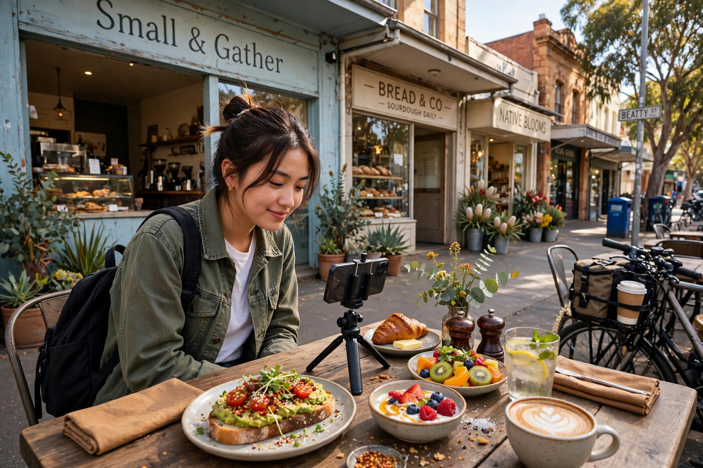

Nano influencer marketing Australia
Nano influencer marketing in Australia: the small-business guide
You do not need a celebrity to fill your shop. You need ten locals whose followers live nearby, trust them, and can walk in this weekend.
LocalCreators team · 27 November 2026 · 5 min read

What is a nano creator?
A nano creator — sometimes called a nano influencer — is an everyday creator with between 1,000 and 10,000 followers. They are not famous. They are the food lover in your suburb, the mum who posts school-holiday ideas, the gym regular, the thrifter, the local who knows every café on your street. Their audience is small, but it is real, local, and paying attention.
Why nano engagement beats mega engagement
The numbers back this up. A Virev 2026 study of 391,731 Instagram creators found nano creators had a median engagement rate of 2.1%, compared with 0.5% for mega creators. Engagement here means the share of followers who like, comment, save, or share — the actions that show someone actually noticed, rather than scrolled past.
Why does this happen? Small audiences feel personal. Followers often know the creator, or feel like they do, so a recommendation from someone you half-know carries more weight than a polished ad from a stranger with a million followers. For a small business, that trust is what turns a view into a visit.
One nano creator alone reaches few people, though — a single post might be seen by a few hundred locals. That is why nano influencer marketing works as a bundle, not as a one-off: ten creators posting in the same week reach ten overlapping local audiences, and repetition is what makes people remember you.
How much does nano influencer marketing cost in Australia?
Cost is where nano marketing earns its place. The Virev 2026 study found a median sponsored post cost of $110 for a nano creator, versus $636 for a micro creator. The Australia Experiences benchmark from August 2026 puts Australian nano rates at $100–$400 per post, and micro rates at $300–$3,000 per post — so a single micro post can cost as much as a whole bundle of nano posts.
Platform pricing varies just as widely. Posted, one of the best-known creator marketplaces, charges $500 a month, with a $5,000 contest minimum, according to its help centre in October 2026. TRIBE, founded in Melbourne and home to more than 70,000 creators, does not publish prices — brands get a custom quote. Eros charges A$99 a month on a 12-month plan for Sydney venues, and Apfluencer charges $199–$599 a month across five cities.
LocalCreators sits at the affordable end of that range on purpose. Our Starter bundle is $79 a month for five creators, and Growth is $99 a month for ten creators, with a pay-as-you-go bundle at $149. Creators keep 85–90% of what you pay. See the full breakdown on our pricing page.
How to run a nano campaign: five steps
- Pick your suburb first, not your creator. Start with where your customers live, then find creators whose followers live there too.
- Choose creators who already fit. A brunch café wants food creators; a salon wants beauty creators. Check they have posted about similar places before.
- Keep the brief short. Say what makes your place worth visiting, what to show, and what not to promise. Let creators use their own voice.
- Approve every post before it goes live. Check the draft, the details, and the disclosure tag before anything is published.
- Measure visits, not just likes. Track profile visits, saves, bookings, and walk-ins — then rebook the creators who brought people in.
If you want help finding the right creators, our guide to finding UGC creators in Sydney without an agency walks through where to look and what to check before you pay anyone.
Disclosure is not optional
Australian law requires paid creator posts to be clearly disclosed — tags like #ad or Paid Partnership are not decoration, they are the rule. In March 2026 the ACCC fined PhotobookShop $39,600 for influencer disclosure failures. That is a serious amount for a small business to risk over a missing hashtag.
Who nano marketing suits — and who it does not
Nano influencer marketing suits businesses whose customers are local and whose product is worth showing: cafés and restaurants, salons and beauty studios, gyms, boutiques, and neighbourhood shops. It suits the 2,656,469 small businesses in Australia — 97.3% of all Australian businesses, according to the ABS in June 2025 — most of which will never pay for an agency retainer or a $500-a-month platform.
It does not suit every business. If your customers are spread across the whole country, or you sell only online with no local tie, a local nano bundle will not be the best spend. But for a local shop that wants steady, repeatable foot traffic, ten small voices in your suburb will usually beat one big voice somewhere else.
The bottom line
Nano influencer marketing in Australia works for small business because it matches how local customers actually decide: they trust people nearby, they act on recommendations from people they recognise, and they visit places their friends keep posting about. Keep the bundle local, keep the brief honest, disclose every paid post, and measure what walks through the door.